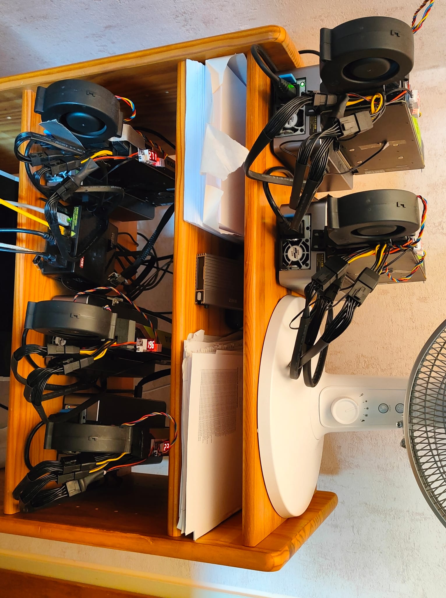

The Frankenstein MiniPC
5 GPUs, 192 GB VRAM — how a tiny MiniPC became a 235B+ inference server
The Base: AOOSTAR GEM 10
- AMD Ryzen 9 7945HX, 32 GB RAM
- 3x M.2 2280 NVMe slots (1 TB SSD installed, 2 free)
- 1x OCuLink port (external)
- 1x USB4 port (external)
- Compact, silent, runs 24/7
Originally bought as a simple home server. Then the GPU addiction started.
The Build — Step by Step
AOOSTAR AG01 eGPU adapter, Tesla P40, connected via OCuLink. Worked immediately. Running 30B models.
I was not done.
AOOSTAR AG02 eGPU adapter with another P40 via USB4. Also worked immediately. The MiniPC handles both OCuLink and USB4 simultaneously — they don't share lanes. Before buying, AOOSTAR support confirmed this would work.
M.2-to-OCuLink adapter (K49SQBK, PCIe 5.0, active chip) plugged into a free internal M.2 slot. To get the cable out: sawed a slot into the fan grille on the side panel. Not pretty, but it works. Connected another AG01 + P40.
AOOSTAR support said M.2-to-OCuLink should work in principle. It did.
Bought a Quadro RTX 8000 (48 GB). It would NOT work over OCuLink — wouldn't even complete POST. Hung at the handshake. P40s worked fine in the same slot.
Tried different BIOS settings, tried the Smokeless BIOS tool to access hidden UEFI variables — nothing helped. Moved it to the AG02 (USB4) where it worked, but that meant losing a P40 slot. Days of frustration.
The problem: GEM 10's BIOS doesn't expose Resizable BAR settings, and the RTX 8000 needs a BAR larger than 256 MB to work over OCuLink. P40s are older and don't care.
ReBarState writes the BAR size directly into UEFI NVRAM. Set it to 4 GB, rebooted — RTX 8000 worked everywhere. OCuLink, M.2 adapter, AG01. Nearly fell off my chair.
Don't bother with the Smokeless BIOS tool if you need ReBAR — go straight to ReBarUEFI.
A second Quadro RTX 8000 joined the mix, and the headline addition: a Tesla V100 (32 GB), bought already converted from SXM2 to PCIe (a Chinese-market mod — a server-form-factor card carrier-boarded onto a PCIe interface). Compute capability 7.0, HBM2 with inline ECC, and noticeably faster than the P40s for the side-channel workloads (TTS / vision).
To free up a fast M.2 slot for another OCuLink adapter, the boot SSD and a backup drive were moved out to USB 3 — the precious PCIe lanes belong to the GPUs. End state: 4 cards on M.2→OCuLink adapters with 4 dedicated PCIe lanes each, straight to the CPU; the 5th on the USB4 port.
The five-card layout as of March 2026 — the two P40 slots hold V100s today, see the update at the top.
| GPU | VRAM | Connection |
|---|---|---|
| Quadro RTX 8000 #1 | 48 GB | M.2 → OCuLink (4 lanes) |
| Quadro RTX 8000 #2 | 48 GB | M.2 → OCuLink (4 lanes) |
| Tesla P40 #1 | 24 GB | M.2 → OCuLink (4 lanes) |
| Tesla P40 #2 | 24 GB | M.2 → OCuLink (4 lanes) |
| Tesla V100 (SXM2→PCIe) | 32 GB | USB4 |
| Total | 176 GB | + boot SSD & backup on USB 3 |
Photos

The MiniPC with OCuLink cables running to AG01 adapters and USB4 to the AG02. The two yellow cables are Ethernet — one for LAN, one for direct point-to-point RPC to the development machine.

The complete "server rack" — a wooden shelf holding all 5 eGPUs (2x RTX 8000, 2x P40, 1x V100) on their adapters. The desk fan is part of the cooling story.
Cooling
The P40s and RTX 8000 are server/workstation cards — passive or blower-style coolers designed for chassis airflow that doesn't exist in an open shelf. Solution: 3D-printed fan adapters with BFB1012HH fans and temperature-controlled PWM fan controllers with probes.
Initially tried higher-CFM fans (BFB1012VH) — unbearably loud and didn't cool any better. The BFB1012HH are the sweet spot: quiet enough to live with, even at full speed. Even at 100% GPU load, nvidia-smi rarely shows temperatures above 50°C.
The eGPU adapters have small built-in fans, but they rarely spin up.
Cost Breakdown
All GPUs bought used via eBay — the P40s and the V100 from Chinese sellers (shipped from China, + customs), the two RTX 8000 locally via eBay Kleinanzeigen in Germany.
| Component | Price | Source |
|---|---|---|
| AOOSTAR GEM 10 MiniPC | ~€450 | New |
| Quadro RTX 8000 (x2) | ~€1,200 each | eBay Kleinanzeigen, Germany |
| Tesla P40 (x2) | ~€190 each | eBay (China, + customs) |
| Tesla V100 (SXM2→PCIe modded) | €640 | eBay (China, + customs) |
| eGPU adapters (M.2→OCuLink x4 + USB4) | ~€45-210 each | AOOSTAR / AliExpress |
| BFB1012HH fans + PWM controllers | ~€10 each | eBay / AliExpress |
| 3D-printed fan adapters | Free | Self-printed |
| Total | ~€4,700 (approx) |
Power Consumption (Idle)
Measured per-card idle draw (nvidia-smi), August 2026, with no model resident in VRAM.
| Component | Idle Power |
|---|---|
| Quadro RTX 8000 (x2) | 13W each = 26W |
| Tesla V100, SXM2→PCIe modded | 26W |
| Tesla V100, native PCIe (x2) | 24W each = 48W |
| MiniPC | ~7-10W |
| Total | ~110W |
A 192 GB VRAM inference server idling around ~110W. Try that with a proper server rack.
Two things worth noting. The SXM2→PCIe modded V100 idles about 2W above the two native PCIe cards — consistently, not as measurement noise. And the V100s draw considerably more at idle than the P40s they replaced (24–26W versus ~9W each), so dropping the Pascal tier cost roughly 35W: the March 2026 build with 176 GB sat at about 76W. Worth it for HBM2 bandwidth, inline ECC and compute capability 7.0 — but it is not a free upgrade.
What It Runs
Representative models the Mini runs GPU-resident. The tok/s figures in this first table are ballpark numbers from the earlier 4-GPU stage — the August 2026 table further down has measurements from the current cards. GPU count, tensor split and context are auto-calibrated per model by AIfred — and MTP-capable models now run with speculative decoding, so real-world speeds on the 5-GPU config tend to be higher.
| Model | Size | Quant | Context | KV Cache | TG tok/s |
|---|---|---|---|---|---|
| Qwen3-4B Instruct | 4B | Q8_0 | 262K | f16 | ~30 |
| Qwen3-30B-A3B Instruct | 30B MoE | Q8_0 | 262K | f16 | ~35 |
| GPT-OSS-120B-A5B | 120B MoE | Q8_K_XL | 131K | f16 | ~50 |
| Qwen3-Next-80B-A3B | 80B MoE | Q8_K_XL | 262K | f16 | ~35 |
| Qwen3.5-122B-A10B | 122B MoE | Q8_K_XL | 262K | f16 | ~21 |
| Nemotron-3-Super-120B | 120B NAS-MoE | Q5_K_XL | 874K | f16 | ~17 |
| Qwen3.5-397B-A17B | 397B MoE | IQ3_XXS | 262K | q8_0 | ~20 |
| Qwen3-235B-A22B Instruct | 235B MoE | Q3_K_XL | 112K | q8_0 | ~11 |
All models GPU-only (ngl=99), flash-attn, Direct-IO, mlock. Context sizes and the per-GPU tensor split are auto-calibrated by AIfred's 3-phase calibration to maximize available VRAM — including a separate "speed" variant (fewer GPUs, less context, more throughput) and automatic placement of TTS / vision side-channels onto dedicated cards. MTP-capable models (UD-MTP GGUFs) additionally run with speculative decoding (--spec-type draft-mtp), which lifts generation speed further.
Model lifecycle managed by llama-swap — models auto-swap on request, Direct-IO makes loading near-instant.
Update — August 2026: measured on the current 5-GPU mix
Prompt processing (PP) and token generation (TG) in tok/s, taken from real chat sessions on 2x RTX 8000 + 3x V100. Read these as a range, not as a benchmark: end-to-end numbers move with prompt length, RAG context and cache state, and every model below runs with speculative decoding.
| Model | Size | Quant | GPUs | PP tok/s | TG tok/s |
|---|---|---|---|---|---|
| Qwen3.5-4B | 4B dense | Q8_K_XL | 1 | 2,738–3,211 | 66–92 |
| Qwen3.6-27B | 27B dense | Q8_K_XL | 1–2 | 557–730 | 21–27 |
| Qwen3.6-35B-A3B | 35B MoE | Q8_K_XL | 1 | 1,841 | 105 |
| Qwen3.5-122B-A10B | 122B MoE | Q8_K_XL | 4–5 | 503–655 | 42–50 |
| DeepSeek-V4-Flash-0731 | 284B MoE, 13B active | UD-Q4_K_XL | 5 | 163–376 (med 325) | 19–41 (med 24) |
| Qwen3.5-397B-A17B | 397B MoE, 17B active | IQ3_S | 5 | 315 | 36–46 |
Two findings worth calling out. Microbatch size matters enormously for MoE models: raising -ub from 512 to 2048 lifted prompt processing by 53% to 2.1x across the MoE profiles (isolated llama-bench, 397B pp8192: 240 → 399 tok/s) while leaving generation untouched — expert reads amortize over the larger microbatch. Dense models gain only 6–8% and were deliberately left at 512.
And the draft model decides how fast generation feels. The MTP-capable Qwen models draft with 90–96% acceptance. DeepSeek-V4-Flash instead uses a separate 11 GB DSpark sidecar draft (--spec-type draft-dspark) at 61–65% acceptance, and it is strongly content-dependent: writing structured code it drafts near its ceiling at 40–45 tok/s, while free-form reasoning text drops to around 20. That is why its answer-average lands below the 397B even though its prompt processing is roughly 1.8x faster and its time-to-first-token about 3x shorter. The PP advantage comes from the architecture — 43 layers, a sparse-attention indexer and a very cheap MLA KV cache — not from the draft model.
Limitations
- Mixed compute capabilities — P40s are CC 6.1, V100 is CC 7.0, RTX 8000s are CC 7.5. llama.cpp handles the mix happily; tensor-parallel backends are pickier.
- vLLM needs CC 7.0+ — fine on the V100 and the RTX 8000s, not on the P40s. The planned P40 → V100 migration would unlock vLLM across the board.
- The P40s are the slow tier (used as spillover); the V100 (HBM2, inline ECC) and the RTX 8000s carry the fast work and the TTS / vision side-channels.
- No native BF16 on these GPUs (FP16 works fine).
Lessons Learned
What I'd do differently
- 64 GB RAM from the start. 32 GB is tight with 200B+ models.
- RTX 8000 prices have risen significantly — most listed above €2,000 now. Got lucky at €1,200.
- Skip the Smokeless BIOS tool — go straight to ReBarUEFI.
What I wouldn't change
- MiniPC form factor. Silent, tiny, sips power, runs 24/7.
- llama.cpp + llama-swap. Calibrate once per model, done.
- OCuLink. Reliable x4 bandwidth, no driver issues.
- Incremental approach. Start small, verify, expand.
Next upgrade
The trajectory is swapping the remaining P40s out for faster cards (more V100s and/or RTX 8000s). Once the slow Pascal tier is gone, vLLM becomes viable across all GPUs and the whole rig moves up a class. ReBAR is sorted — it's just a matter of cards showing up at sane prices.
Done — both P40s were replaced by V100s by July 2026, bringing the machine to 192 GB VRAM with no card below compute capability 7.0. See the update note at the top.
The honest take
For ~€4,700 you could probably get a 128 GB unified memory MiniPC and call it a day. But I didn't know where this was going when I started. One GPU became two, two became four, then five, and suddenly I'm sawing fan grilles and hunting down an SXM2→PCIe-converted V100 from a Chinese seller. That's how hobbies work. And honestly, the building was half the fun.